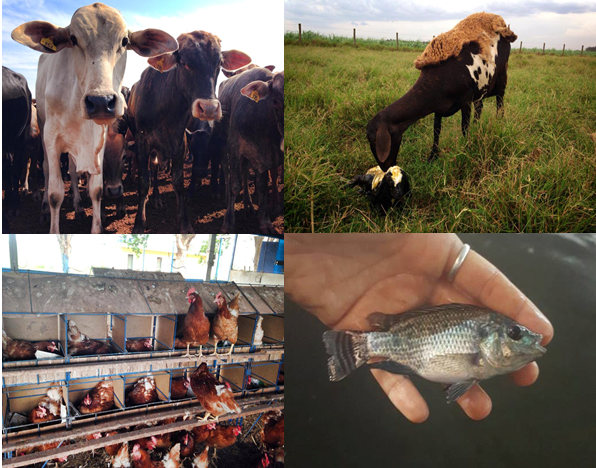

Publicado em 14 de junho de 2018 por José Vitor Pizol e Mariana Fantini
O mercado consumidor está cada vez mais exigente em relação a conhecer e avaliar as condições da pecuária, assim, estabelecendo um padrão de bem estar animal na produção.
O bem estar animal é um ciência que vem crescendo ao longo do tempo, que estuda a relação de respeito entre o homem com os outros animais, sejam eles com fim de alimentos, trabalho ou companhia. Existem vários conceitos sobre o bem estar animal, e um deles é descrito por BRAMBELL (1965) que são as cinco liberdades, que são elas:
A importância do bem estar animal em animais de produção não está relacionado apenas em tratar bem o animal ou na exigência do mercado consumidor em relação a qualidade do produto final, mas está se tornando uma pratica cada vez maior, para se minimizar perdas (causadas por agressões e instalações inadequadas) e maximizar lucros agregando uma qualidade ao produto final.
A partir disso, a FAI do Brasil (Food Animal Initiative) tem por objetivo criar e oferecer exemplos práticos de como melhorar a produção animal utilizando estratégias que possibilitam incremento no bem-estar das pessoas e dos animais nas propriedades rurais. O projeto é multinacional (Reino Unido, Brasil e China) e possibilita a chance de produtores, instituições públicas, privadas e a academia aprenderem mais sobre as novas estratégias de produção com foco no conceito dos três “Es” da sustentabilidade:
Ethics (Ética) – no qual os alimentos devem ser produzidos de forma segura e garantindo um nível bom de bem-estar humano e animal;
Environment (Meio Ambiente) – respeitando e preservando o meio-ambiente assegurando recursos para futuras gerações;
Economics (Economia) – ser economicamente viável, permitindo a prosperidade do negócio.
A FAI escolheu trabalhar com essa proposta porque acredita que é possível conduzir as relações produtivas, aliando a economia, o ambiente e a ética em um projeto único para o sucesso de todos os envolvidos na cadeia produtiva de alimentos.
Os trabalhos são realizados com bovinos de corte, ovinos, galinhas poedeiras criadas livres de gaiolas e alevinagem de tilápia. O foco para todos os sistemas de produção é a produção economicamente viável, ambientalmente correta e eticamente definida. O desenvolvimento dos detalhes de cada sistema leva em consideração não somente as questões de produtividade especificamente, mas sim, uma análise mais ampla de toda a cadeia produtiva, desde como esse produto é concebido até como ele é percebido pelos consumidores. Todas são espécies comerciais destinadas a venda, onde o desenvolvimento e pesquisa são parte do processo.

Fonte: Facebook FAI do Brasil, Jaboticabal, SP, Brasil
A partir desse trabalho a FAI tornou-se um parceiro reconhecido e confiável para pequenos e grandes clientes na Europa, América do Norte e do Sul e Ásia, oferecendo suporte científico e técnico aos produtores.
Como desafios que o Brasil precisa superar para que o bem-estar animal seja pré-requisito na pecuária, a FAI acredita que o desafio está em encontrar o caminho do meio entre as melhores práticas e suas aplicações no dia-a-dia. Demonstrar com resultados que bem-estar na fazenda é muito mais que uma simples propaganda bonita, ou uma indústria auditada e sim uma cultura que deve ser inserida em todos os ambientes possíveis.
A FAI do Brasil encontra-se localizada na cidade de Jaboticabal – SP.
Para maiores informações:
SITE: http://www.faidobrasil.com/
FACEBOOK: https://www.facebook.com/FAI-do-Brasil-308271159229265/?fref=ts
Referências
Douglas Luís Vieira. O BEM-ESTAR ANIMAL E AS CINCO LIBERDADE. Acesso no dia 5 de novembro de 2016 <Clique Aqui>
Ministério da Agricultura. Acessado em 5 de novembro de 2016 < Clique Aqui >